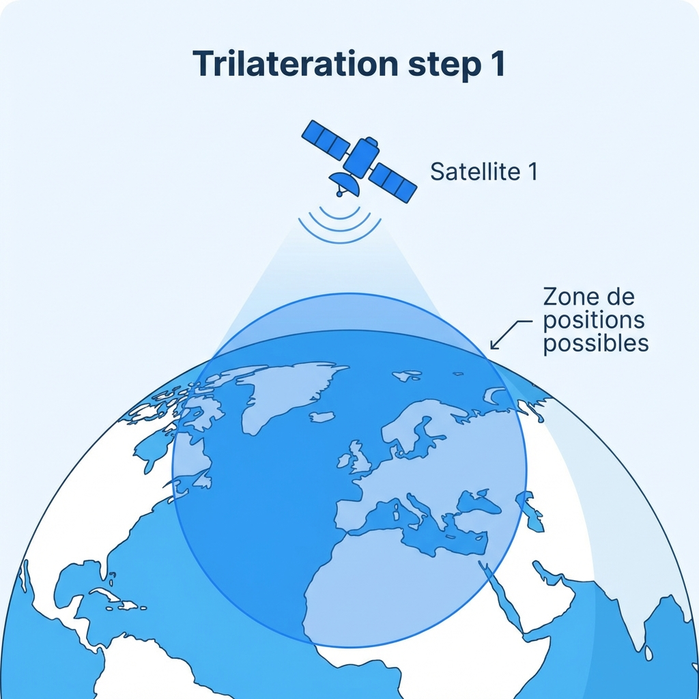
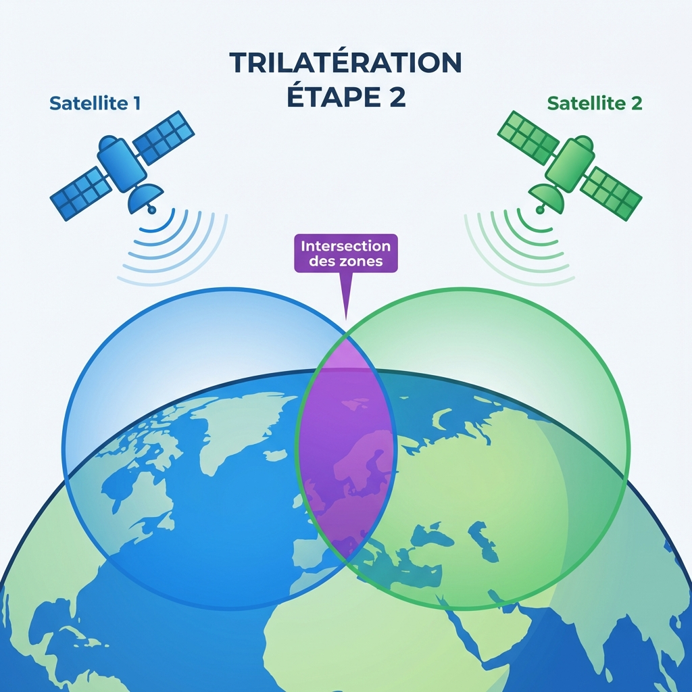
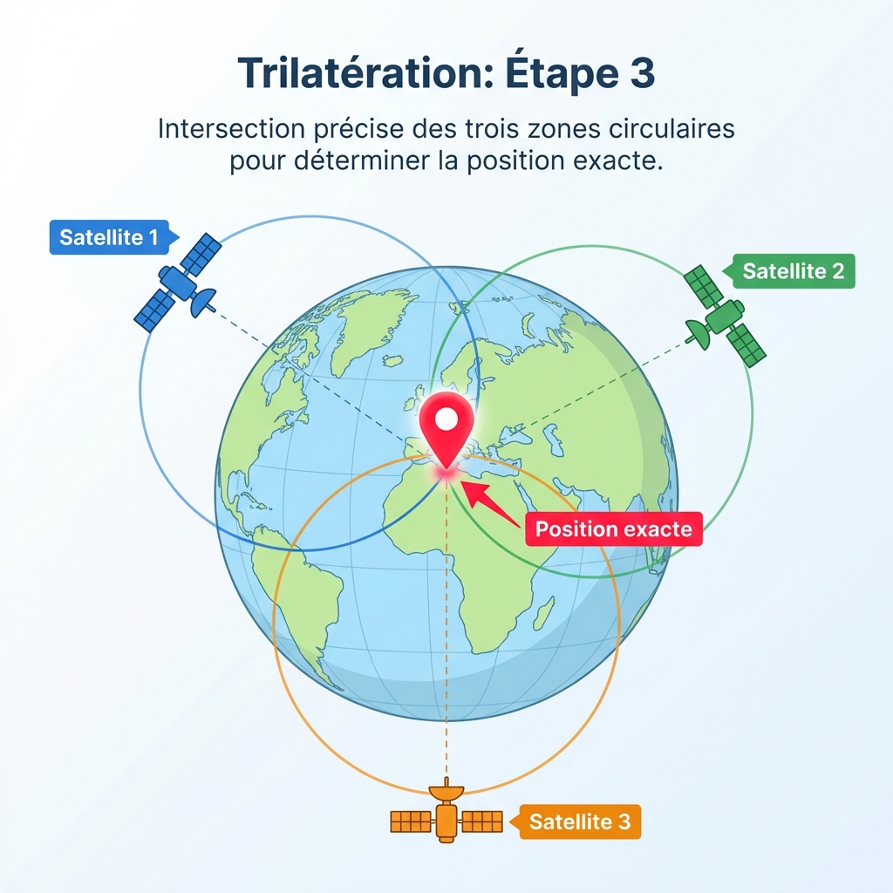

🌍 La Géolocalisation
SNT - Seconde Localisation, cartographie et mobilité
📋 Plan du cours
- 📚 Introduction et historique
- 🌐 Les coordonnées géographiques
- 🛰️ Comment fonctionne le GPS ?
- 📡 Le protocole NMEA
- 🎯 Applications pratiques
- ⚠️ Enjeux et vie privée
Durée : 1 heure
1️⃣ Introduction et Historique
🤔 Qu'est-ce que la géolocalisation ?
🤔 Qu'est-ce que la géolocalisation ?
Technique permettant de situer de manière précise un lieu, une personne ou un objet sur la planète grâce à des coordonnées géographiques.
Exemples d'utilisation quotidienne
Exemples d'utilisation quotidienne
- 📱 Smartphone (Google Maps, Waze)
- 🚗 GPS automobile
- 📦 Suivi de colis
- 🎮 Pokémon GO
- 📸 Géotagging de photos
⌛ Histoire du GPS
De quand date le GPS ?
⌛ Histoire du GPS
| Année | Événement |
|---|---|
| 1960s | Développement militaire par l'armée américaine |
| 1980s | Premier satellite GPS lancé |
| 1990s | Ouverture au grand public |
| 2000s | Développement d'autres systèmes (Galileo, GLONASS, BeiDou) |
| Aujourd'hui | Omniprésent dans nos appareils |
🌍 Les systèmes de géolocalisation
| Système | Pays | Précision |
|---|---|---|
| GPS | 🇺🇸 USA | 5-10 m |
| Galileo | 🇪🇺 Europe | 1 m |
| GLONASS | 🇷🇺 Russie | 5-10 m |
| BeiDou | 🇨🇳 Chine | 5-10 m |
💡 Galileo est le plus précis !
2️⃣ Les Coordonnées Géographiques
🌐 Comment localiser un point sur Terre ?
On utilise 3 dimensions :
🌐 Comment localiser un point sur Terre ?
📍 Latitude
- Position Nord-Sud
- De -90° (Pôle Sud) à +90° (Pôle Nord)
- Exemple : 48.8584° N (Paris)
🌐 Comment localiser un point sur Terre ?
📍 Longitude
- Position Est-Ouest
- De -180° à +180°
- Exemple : 2.2945° E (Paris)
🌐 Comment localiser un point sur Terre ?
📍 Altitude
- Hauteur par rapport au niveau de la mer
🗼 Exemple : Tour Eiffel
Latitude : 48.8584° N
Longitude : 2.2945° E
Altitude : ~57 m

🌐 Exercice :
Trouvez les coordonnées de votre lycée sur www.coordonnees-gps.fr ou sur www.calcmaps.com !
📐 Formats de coordonnées
Format Décimal (le plus simple)
48.8584° N, 2.2945° E
📐 Formats de coordonnées
Format Degrés-Minutes (DM)
48° 51.504' N, 2° 17.670' E
Conversion : 1° = 60' (minutes)
📐 Formats de coordonnées
Format Degrés-Minutes-Secondes (DMS)
48° 51' 30.24" N, 2° 17' 40.20" E
Conversion : 1' = 60" (secondes)
📐 Formats de coordonnées
À vous de jouer avec les coordonnées du lycée pour les transformer en minutes puis en secondes !
3️⃣ Comment fonctionne le GPS ?
🛰️ Le principe de la trilatération
Trilatération = Déterminer une position en mesurant les distances depuis au moins 3 satellites
🛰️ Étape 1 : Un seul satellite
Avec 1 satellite, on connaît seulement la distance au satellite.
➡️ La position peut être n'importe où sur un cercle autour du satellite

🛰️ Étape 2 : Deux satellites
Avec 2 satellites, on a deux cercles qui se croisent.
➡️ La position est réduite à 2 points possibles (intersection des cercles)

🛰️ Étape 3 : Trois satellites
Avec 3 satellites, les trois cercles se croisent en un seul point.
➡️ C'est votre position exacte ! 📍

📡 Le processus en 3 étapes
Étape 1️⃣ : Réception des signaux
- Le récepteur capte 3 satellites
- 3 pour la position (x, y, z)
- 1 (optionel) pour synchroniser les satellites
Étape 2️⃣ : Calcul des distances
- Distance = Vitesse × Temps
- Vitesse du signal = 300 000 km/s (vitesse de la lumière)
Étape 3️⃣ : Résolution mathématique
- Calcul du point d'intersection des sphères
🧮 Exemple de calcul
Question : Un signal met 0.07 secondes pour arriver (Vitesse du signal = 300 000 km/s). Quelle est la distance ?
Réponse :
Distance = Vitesse × Temps
Distance = 300 000 km/s × 0.07 s
Distance = 21 000 km
✅ Les satellites GPS orbitent à environ 20 200 km d'altitude
⚠️ Facteurs affectant la précision
| Facteur | Impact |
|---|---|
| 🛰️ Nombre de satellites | Plus il y en a, meilleure est la précision |
| 🌧️ Météo | Nuages, pluie peuvent perturber |
| 🏢 Obstacles | Bâtiments, montagnes bloquent les signaux |
| 📱 Qualité du récepteur | Meilleur récepteur = meilleure précision |
Précision typique : 5-10 mètres (GPS civil)
4️⃣ Le Protocole NMEA
📡 Qu'est-ce que le NMEA-0183 ?
Standard de communication pour transmettre les données GPS sous forme de trames textuelles
Développé par la National Marine Electronics Association
Exemple de trame GPGGA
$GPGGA,064036.289,4836.5375,N,00740.9373,E,1,04,3.2,200.2,M,,,,0000*0E
🔍 Décodage d'une trame NMEA
$GPGGA,064036.289,4836.5375,N,00740.9373,E,1,04,3.2,200.2,M,,,,0000*0E
| Champ | Valeur | Signification |
|---|---|---|
$GPGGA |
- | Type de trame (position GPS) |
064036.289 |
06:40:36 | Heure UTC |
4836.5375,N |
48° 36.5375' N | Latitude |
00740.9373,E |
7° 40.9373' E | Longitude |
04 |
4 | Nombre de satellites |
200.2,M |
200.2 m | Altitude |
📍 Cette position correspond à Paris, France
5️⃣ Applications Pratiques
🗺️ Le calcul d'itinéraires
Les applications de navigation calculent le meilleur chemin en fonction de :
- 📏 Distance : Chemin le plus court
- ⏱️ Temps : Trajet le plus rapide
- 🚗 Type de route : Autoroutes, nationales
- 🚦 Trafic en temps réel : Bouchons, accidents
- 💰 Coût : Péages, carburant
🚗 Exemple : Paris → Lyon
| Itinéraire | Route | Durée | Distance |
|---|---|---|---|
| Rapide | A6 (autoroute) | 4h30 | 465 km |
| Économique | Routes nationales | 6h15 | 445 km |
| Touristique | Routes départementales | 7h00 | 520 km |
6️⃣ Enjeux et Vie Privée
⚠️ Risques liés à la géolocalisation
🔒 Vie privée
- Traçabilité de vos déplacements
- Collecte de données personnelles
- Risque de surveillance
🏠 Sécurité personnelle
- Révélation de votre domicile
- Indication de votre absence (risque de cambriolage)
- Harcèlement / stalking
⚠️ Risques liés à la géolocalisation
📸 Métadonnées GPS
- Les photos contiennent souvent votre position exacte
- Partage involontaire de votre localisation
🛡️ Comment se protéger ?
✅ Bonnes pratiques
- Désactiver la géolocalisation quand elle n'est pas nécessaire
- Vérifier les autorisations des applications
- Utiliser le mode "position approximative" plutôt que "précise"
- Supprimer les métadonnées GPS avant de partager des photos
- Ne pas partager sa position en temps réel publiquement
💡 Paramètres → Confidentialité → Localisation sur votre smartphone
❓ Questions ?
📋 Questionnaire d'évaluation
5 minutes pour vérifier vos connaissances !
Rendez-vous sur le questionnaire distribué